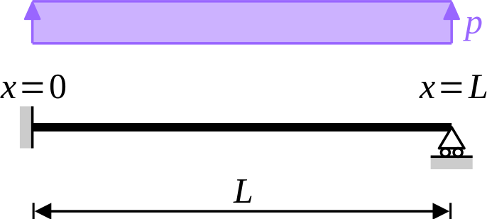

In finite element analysis, Euler–Bernoulli beam elements are usually based on Hermite shape functions. Did you know that, for static load-cases, the resulting elements deliver the exact solution? “This is trivial!”, you might think. “The potential energy is minimized over a subspace that contains the exact solution”. You would be right: for concentrated loads applied to the nodes of the structure, the finite element displacements based on Hermite shape functions are indeed exact at any point of the structure. What is probably less known is that, regardless of the applied loads, the nodal displacements are always exact. In this series, we discuss this remarkable property.
Hermite shape functions
Bending of Euler–Bernoulli beams are governed by the following equation (see Wikipedia) \[ \frac{\mathrm{d}^2}{\mathrm{d}x} \biggl( EI \, \frac{\mathrm{d}^2 v}{\mathrm{d}x^2} \biggr) = p, \] where \(v(x)\) denotes the deflection of the beam, \(p(x)\) its (distributed) loading, and \(EI\) the bending stiffness. The above equation is a fourth-order ordinary differential equation: it requires four boundary conditions. For example, the deflections and rotations might be prescribed at both ends \(x = 0\) and \(x = L\) of the beam \[ v(0) = v_0, \quad v'(0) = θ_0, \quad v(L) = v_L \quad \text{and} \quad v'(L) = θ_L, \] where \(v_0\), \(v_L\) are the prescribed deflections and \(θ_0\), \(θ_L\) are the prescribed rotations.
Let us focus on the case \(p \equiv 0\): the beam is loaded at its ends only. Then, \(v(x)\) is a third-order polynomial, which is usually conveniently writen as a linear combination of four shape functions \[ v(x) = v_0 \, N_1(x) + θ_0 \, N_2(x) + v_L \, N_3(x) + θ_L \, N_4(x), \] where \(N_1\), \(N_2\), \(N_3\) and \(N_4\) are four linearly independent third-order polynomials defined by the boundary conditions gathered in table 1. These shape functions are usually referred to as Hermite interpolation polynomials. Their precise expression is not relevant to the present series (see Wikipedia for more details).
| \(k\) | \(N_k(0)\) | \(N_k'(0)\) | \(N_k(L)\) | \(N_k'(L)\) |
|---|---|---|---|---|
| 1 | 1 | 0 | 0 | 0 |
| 2 | 0 | 1 | 0 | 0 |
| 3 | 0 | 0 | 1 | 0 |
| 4 | 0 | 0 | 0 | 1 |
Hermite elements are beam elements based on the above Hermite shape functions. In other words, the total potential energy of the structure is minimized over the space of displacements that are third-order polynomials between adjacent nodes, with \(\mathrm{C}^1\) continuity at each node. This is illustrated in the simple example below.
Example: the propped cantilever
Let us consider the case of a propped cantilever, built-in at the left-hand side (\(x = 0\)) and simply supported at the right-hand side (\(x = L\)). The beam is subjected to a uniformly distributed load \(p\) (see figure 1).

The exact solution is classical \[ v_{\mathrm{exact}}(x) = \frac{p \, L^4}{48EI} \, \frac{x^2}{L^2} \, \biggl( 3 - 2\frac{x}{L} \biggr) \, \biggl( 1 - \frac{x}{L} \biggr) \] and we seek an approximate solution to this problem. Since we want to mimic what a finite element code would deliver, we seek \(v_{\mathrm{approx}}\) as a third-order polynomial \[ v_{\mathrm{approx}}(x) = a \, x^3 + b \, x^2 + c \, x + d, \] where the boundary conditions \(v(0) = 0\), \(v'(0) = 0\) and \(v(L) = 0\) lead to \(d = 0\), \(c = 0\) and \(b = -a \, L\) \[ v_{\mathrm{approx}}(x) = a \, x^2 \, \bigl( x - L \bigr). \]
The strain energy \(U\) and potential of external forces \(V\) are two functions of the sole remaining unknown, \(a\) \[ U(a) = \int_0^L \tfrac{1}{2} \, EI \, \bigl[ v_{\mathrm{approx}}''(x) \bigr]^2 \, \mathrm{d}x = 2EI \, L^3 \, a^2, \] \[ V(a) = \int_0^L p \, v_{\mathrm{approx}}(x) \, \mathrm{d} x = -\frac{p \, L^4 \, a}{12} \] and the total potential energy \(Π\) reads \[ Π(a) = 2EI \, L^3 \, a^2 -\frac{p \, L^4 \, a}{12}. \]
The value of the constant \(a\) is found from the stationarity condition of the total potential energy \[ 0 = \frac{\mathrm{d}Π}{\mathrm{d}a} = 4EI \, L^3 \, a - \frac{p \, L^4}{12} \quad \Rightarrow \quad a = \frac{p \, L}{48EI} \] and finally \[ v_{\mathrm{approx}}(x) = \frac{p \, L^4}{48EI} \, \frac{x^2}{L^2} \, \biggl( 1 - \frac{x}{L} \biggr). \]
Obviously, \(v_{\mathrm{exact}}\) and \(v_{\mathrm{approx}}\) are not equal! As a consequence, the exact and approximate bending moments at the built-in support are widely different \[ M_{\mathrm{approx}}(0) = EI \, v_{\mathrm{approx}}''(0) = \frac{p \, L^2}{24} \quad \text{while} \quad M_{\mathrm{exact}}(0) = EI \, v_{\mathrm{exact}}''(0) = \frac{p \, L^2}{8}. \]
Quite surprisingly, though, the nodal displacements coincide. Indeed, from the boundary conditions \[ v_{\mathrm{approx}}(0) = v_{\mathrm{exact}}(0) = 0, \quad v_{\mathrm{approx}}(L) = v_{\mathrm{exact}}(L) = 0 \quad \text{and} \quad θ_{\mathrm{approx}}(0) = θ_{\mathrm{exact}}(0) = 0. \] The remaining degree of freedom, \(θ(L)\) is also exact \[ θ_{\mathrm{approx}}(L) = v'_{\mathrm{approx}}(L) = -\frac{p \, L^3}{48EI} \quad \text{and} \quad θ_{\mathrm{exact}}(L) = v'_{\mathrm{exact}}(L) = -\frac{p \, L^3}{48EI}. \]
🤔 Is this mere coincidence? Of course not!
Conclusion
Finite element analysis of an assembly of Euler–Bernoulli beams is usually based on Hermite elements, where the transverse deflection is a third-order polynomial in each element, while both deflection and rotation are continuous at each node of the structure.
For loads that are applied between nodes (e.g., distributed loads), the resulting approximate solution differs significantly from the true solution. However, the nodal displacements (deflection and rotation) are always exact, provided that the potential of external forces is evaluated consistently. This requirement will be discussed in the next instalment of this series.